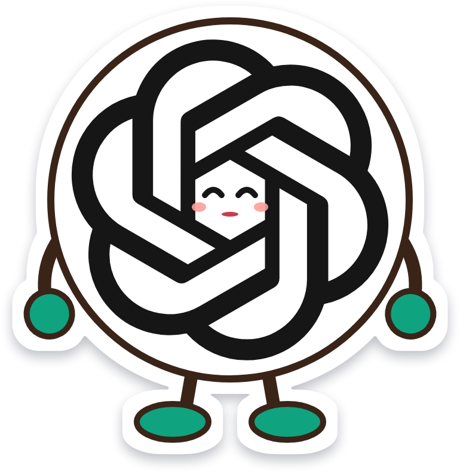
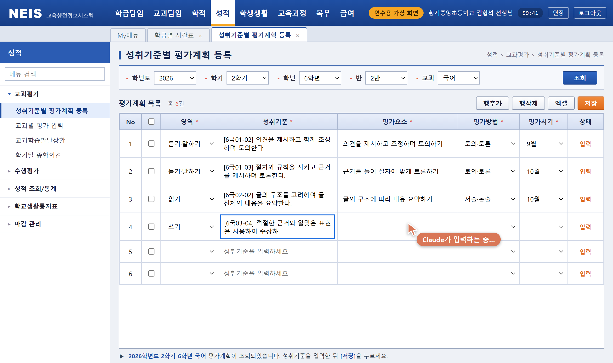
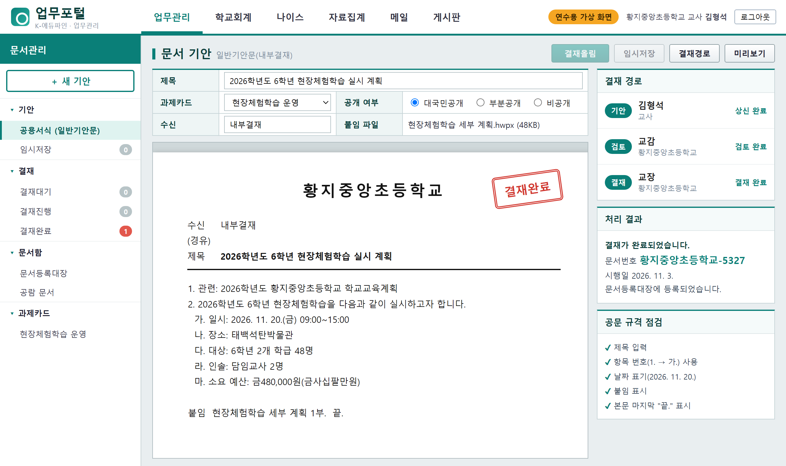
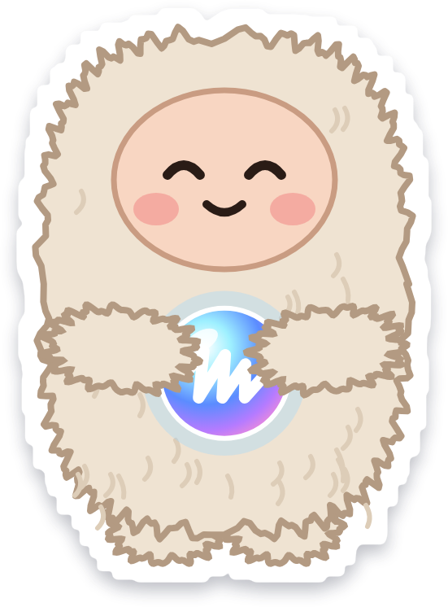
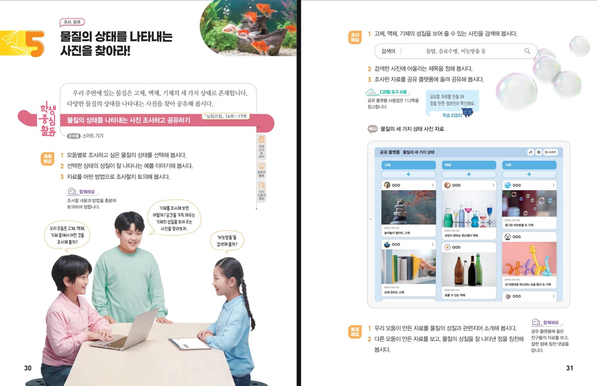
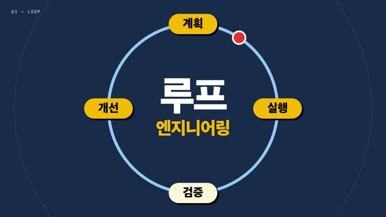
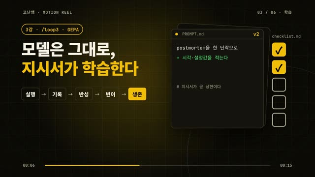
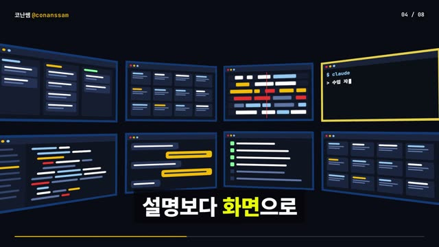
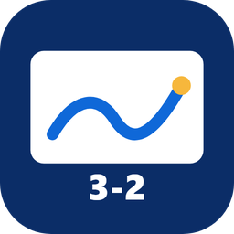

강사 PC마다 start-codex-bridge.bat을 실행하면 자동으로 찾아 아래에 나타납니다. 안 나타나면 검은 창의 연결 주소를 직접 넣으세요. 수강생 요청은 연결된 PC(계정)들에 나뉘고, 한 PC가 꺼지거나 사용량이 다 차면 다른 PC로 옮겨집니다.
start-codex-bridge.bat
이 QR을 찍거나 링크를 단톡방에 보내 주세요. 들어오면 연결 주소와 입장 코드가 자동으로 설정됩니다.



